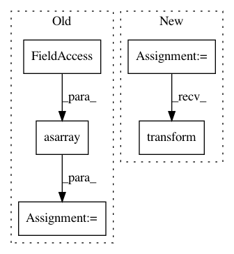

958eeaaa462b1c7f8f98dea8ba2cec5cf6ab32d8,nilearn/input_data/tests/test_nifti_spheres_masker.py,,test_sphere_extraction,#,19
Before Change
masker.fit()
// Test the transform
s = masker.transform(img)
mask = np.asarray(
[
[
[0, 0, 0],
[0, 1, 0],
[0, 0, 0]
],
[
[0, 1, 0],
[1, 1, 1],
[0, 1, 0]
],
[
[0, 0, 0],
[0, 1, 0],
[0, 0, 0]
]
], dtype=bool
)
assert_array_equal(s[:, 0], np.mean(data[mask], axis=0))
def test_anisotropic_sphere_extraction():
data = np.random.random((3, 3, 3, 5))
After Change
mask_img = np.zeros((3, 3, 3))
mask_img[1, :, :] = 1
mask_img = nibabel.Nifti1Image(mask_img, np.eye(4))
masker = NiftiSpheresMasker([(1, 1, 1)], radius=1, mask_img=mask_img)
masker.fit()
s = masker.transform(img)
assert_array_equal(s[:, 0],
np.mean(data[np.logical_and(mask, mask_img.get_data())],
axis=0))
In pattern: SUPERPATTERN
Frequency: 3
Non-data size: 5
Instances
Project Name: nilearn/nilearn
Commit Name: 958eeaaa462b1c7f8f98dea8ba2cec5cf6ab32d8
Time: 2015-05-13
Author: abraham.alexandre@gmail.com
File Name: nilearn/input_data/tests/test_nifti_spheres_masker.py
Class Name:
Method Name: test_sphere_extraction
Project Name: nilearn/nilearn
Commit Name: 4b50eb041ce3a84e9ffdc37232a99f91133dbd2c
Time: 2015-05-07
Author: abraham.alexandre@gmail.com
File Name: nilearn/input_data/tests/test_nifti_spheres_masker.py
Class Name:
Method Name: test_sphere_extraction
Project Name: nipy/dipy
Commit Name: 10137f3f3e982a68fdac3a0253bf0229f0f06b0b
Time: 2015-08-14
Author: jomaroceguedag@gmail.com
File Name: doc/examples/syn_registration_3d.py
Class Name:
Method Name: